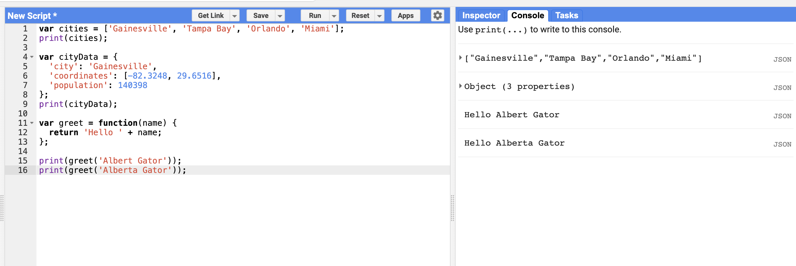

Functions are reusable blocks of code. They take inputs, do work, and return outputs. In Earth Engine, you will write functions to clean imagery, compute indices, and map over collections.
Learning objectives
- Define functions with the
functionkeyword. - Return values so callers can use results.
- Understand parameters versus variables inside the function.
- Apply functions with
.map()on collections.
Why it matters
Functions keep your scripts concise and consistent. They let you change logic in one place instead of editing the same code everywhere.
Quick win: tiny function
var greet = function(name) {
return 'Hello ' + name;
};
print(greet('Albert'));
print(greet('Alberta'));What you should see
Two lines in the console: "Hello Albert" and "Hello Alberta".

Function anatomy
var functionName = function(parameter1, parameter2) {
var result = parameter1 + parameter2;
return result; // send a value back
};- Parameters: inputs listed in parentheses.
- Body: code inside braces runs when called.
- Return: without
return, callers receiveundefined.
Example: Celsius to Fahrenheit
var celsiusToFahrenheit = function(celsius) {
return (celsius * 9 / 5) + 32;
};
print('0 C is', celsiusToFahrenheit(0), 'F');
print('20 C is', celsiusToFahrenheit(20), 'F');
print('100 C is', celsiusToFahrenheit(100), 'F');Functions in Earth Engine
Use functions to process every item in a collection with .map():
var calculateNDVI = function(image) {
var ndvi = image.normalizedDifference(['B5', 'B4']).rename('NDVI');
return image.addBands(ndvi);
};
var collection = ee.ImageCollection('LANDSAT/LC08/C02/T1_L2')
.filterDate('2023-01-01', '2023-12-31')
.map(calculateNDVI);Pro tips
- A function passed to
.map()must return the same type it receives (image in, image out). - Do not use
Map.addLayerorprintinside mapped functions-they are client-side. - Use clear parameter names to make mapped functions readable.
Try it: practice
Write a function that averages two numbers and test it with print.
Create a function that buffers a geometry by a distance parameter; call it with two different distances.
Modify calculateNDVI to compute EVI instead, returning the new band.
Common mistakes
- Forgetting
returnand gettingundefined. - Using client-only calls (
Map.addLayer) inside functions mapped on the server. - Changing variables outside the function instead of returning a result.
Quick self-check
- What happens if you omit
return- - Why should mapped functions avoid
print()- - How do you ensure your mapped function returns the correct type-
Next steps
- Lists to feed functions multiple values.
- Objects to structure function inputs.
- Client vs Server to avoid mixing environments.
Going Deeper: EEFA Book
This module gives you the foundation. To explore further, see Chapter F1.0 (JavaScript and the Earth Engine API) in the Cloud-Based Remote Sensing with Google Earth Engine (EEFA Book).